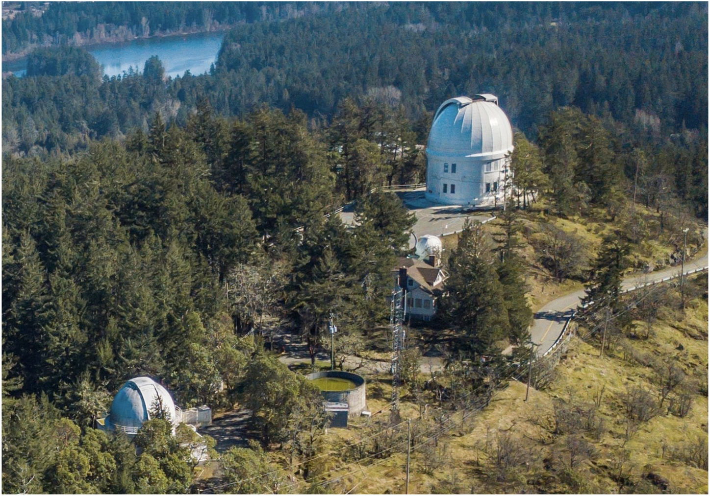

Info about NRC-HAA
Last updated: August 2023This page is about the National Research Council Canada Herzberg Astronomy and Astrophysics Research Centre, and you can find plenty of information about this facility below.

The DAO grounds, focused on the two telescope domes. The 1.8m Plaskett Telescope is housed in the largest white dome, while the 1.2m McKellar sits in the smaller dome in the lower left. The main office and engineering buildings are around the back of the Hill, following the road. Beaver lake is pictured in the background. (Credit: James Di Francesco)
However, the "NRC-HAA" is referred to in several distinct ways and it deserves to be explained in detail. Let's try and clear up the confusion with the following:
Research Names
- NRC: National Research Council Canada. NRC is a federal organization that funds technological innovation across the country in many fields, such as photonics, medical devices, and (most important to us) astronomy.
- HAA/HIA: Herzberg Astronomy and Astrophysics Research Centre. The HAA refers to the astronomy-focused branch of the NRC, located here in Victoria. The full name of this facility is National Research Council Canada Herzberg Astronomy and Astrophysics Research Centre. Quite the mouthful. Sometimes, it is shortened just to "NRC Herzberg" (Note: It used to be called the Herzberg Institute for Astronomy and Astrophysics, so you sometimes hear HIA used interchangeably with HAA).
- DAO: Dominion Astrophysical Observatory. The DAO references the set of telescopes and research facilities that sit on the grounds of the HAA. This observatory goes back to the start of the 20th century and the building of the Plaskett Telescope, the largest of the telescope domes that you can see from around Victoria.
- DRAO: Dominion Radio Astrophysical Observatory. The DRAO is located in Penticton, BC, and is home to the CHIME instrument, as well as many other radio arrays, and the labs where these tools are developed. As the DAO deals primarily with the Optical (including UV, Near-IR) wavebands, these two facilities complement each other and are both components of NRC Herzberg. However, in Victoria, just saying NRC is usually a colloquial reference to the DAO specifically. (Side bar: For those coming from the USA, these two facilities are somewhat analogous to the NRAO and NOIRLab (formerly NAO).)
Community Names
- The Hill: You may sometimes hear someone vaguely refer to the DAO as "The Hill", this is a more casual reference to the large hill where this facility resides.
- FDAO: Friends of the DAO. This community led outreach group organizes events, public lectures, telescope facility tours, and much more around the city of Victoria. The folks from this city are a keen audience and always attend these events well. Many UVic grad and undergrad students help out with this group, and if you are interested, contact Sam Fielder (email) or Simon Smith (email) for more details!
- Centre of the Universe: This is the name of the outreach building that sits on top of the Hill near the Plaskett Telescope dome. This educational centre is operated by the FDAO and is supported by a mix of community grants and HAA funding.
Final Note on Naming: If you use any one of NRC/HIA/HAA/DAO, everyone will know what you are referring to. For simplicity, we will use "NRC-HAA" throughout the remainder of this page.
UVic Association with the NR
A unique aspect of life as an astronomer in Victoria is the access to a world leading astronomy research facility. The NRC is equal parts astronomical research and technology development. Nearly 40 research scientists do observational, theoretical, and computational research, while another entire team of engineers, technicians, mechanics, and electronics experts helping design and build next generation instrumentation for premiere telescopes around the world (e.g., ALMA, CFHT, Gemini, JWST), and highly anticipated multi-national projects (e.g., CASTOR, LSST, SKA).
When you include the faculty here at UVic, the city of Victoria has the most professionals working in the astronomy industry across all of Canada, rivalled only by the combination of astronomers at the University of Toronto and York University in Toronto.
All researchers at the NRC-HAA are also cross-listed as adjunct professors here at UVic. That means that they can supervise students (more below), teach classes, and drop by the department to work for the day (though this is a more rare occurrence).
Students with NRC Supervisors
About 2/3rds of the Astronomy/Astrophysics graduate students here at UVic are partially supervised by NRC-HAA scientists. Those students thus get access to some additional opportunities, most importantly being that they are able to get office space at the NRC-HAA facilities. As NRC-HAA researchers spend the majority of their time at NRC-HAA, many students work from the NRC-HAA at least once a week, allowing them to have in-person meetings with their supervisors and collaborators.
If your supervisor works at the NRC-HAA, then this access will only be granted once you have completed several forms and an orientation. As the NRC-HAA is a federal facility, this process can be a bit tedious, so you are encouraged to ask your supervisor about this promptly, so that you can access these facilities as soon as possible.
NRC-HAA also has weekly colloquia, which are held in a similar format to the departmental colloquia on campus, but they feature a different set of speakers, and these talks are often much more focused on astronomy research. Any astronomy student from UVic can attend these sessions over zoom, and NRC-HAA-supervised students can attend in-person.
Note: If you are a UVic student with access to the NRC-HAA, you are allowed to bring guests with you on any given day. It is wise to ask your supervisor about the protocols here, and to visit the NRC-HAA on-site offices the first time you bring a guest to make sure you are following the rules. However, you can bring anyone as a guest! This means that students without NRC-HAA supervisors can also join you for the day to work on the Hill or attend a colloquium.
Follow this link to find out more about the National Research Council Canada agency, and follow this link to learn more about the staff scientists and projects happening at the Herzberg Astronomy and Astrophysics Research Centre.